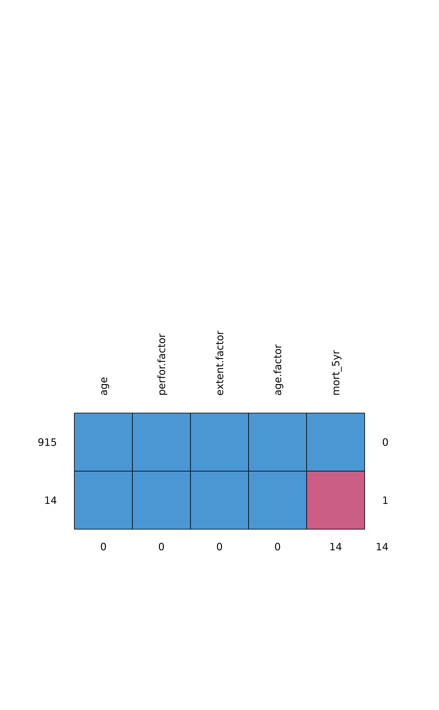

Compare missing data
missing_compare(.data, dependent, explanatory, na_include = FALSE)
| .data | Dataframe. |
|---|---|
| dependent | Variable to test missingness against other variables with. |
| explanatory | Variables to have missingness tested against. |
| na_include | Include missing data in explanatory variables as a factor level. |
A dataframe comparing missing data in the dependent variable across explanatory variables. Continuous data are compared with a Kruskal Wallis test. Discrete data are compared with a chi-squared test.
library(finalfit) explanatory = c("age", "age.factor", "extent.factor", "perfor.factor") dependent = "mort_5yr" colon_s %>% ff_glimpse(dependent, explanatory)#> Continuous #> label var_type n missing_n missing_percent mean sd min #> age Age (years) <dbl> 929 0 0.0 59.8 11.9 18.0 #> quartile_25 median quartile_75 max #> age 53.0 61.0 69.0 85.0 #> #> Categorical #> label var_type n missing_n missing_percent levels_n #> mort_5yr Mortality 5 year <fct> 915 14 1.5 2 #> age.factor Age <fct> 929 0 0.0 3 #> extent.factor Extent of spread <fct> 929 0 0.0 4 #> perfor.factor Perforation <fct> 929 0 0.0 2 #> levels #> mort_5yr "Alive", "Died", "(Missing)" #> age.factor "<40 years", "40-59 years", "60+ years" #> extent.factor "Submucosa", "Muscle", "Serosa", "Adjacent structures" #> perfor.factor "No", "Yes" #> levels_count levels_percent #> mort_5yr 511, 404, 14 55.0, 43.5, 1.5 #> age.factor 70, 344, 515 7.5, 37.0, 55.4 #> extent.factor 21, 106, 759, 43 2.3, 11.4, 81.7, 4.6 #> perfor.factor 902, 27 97.1, 2.9#> age perfor.factor extent.factor age.factor mort_5yr #> 915 1 1 1 1 1 0 #> 14 1 1 1 1 0 1 #> 0 0 0 0 14 14colon_s %>% missing_compare(dependent, explanatory)#> Warning: Chi-squared approximation may be incorrect#> Warning: Chi-squared approximation may be incorrect#> Warning: Chi-squared approximation may be incorrect#> Missing data analysis: Mortality 5 year Not missing #> Age (years) Mean (SD) 59.8 (11.9) #> Age <40 years 67 (7.3) #> 40-59 years 339 (37.0) #> 60+ years 509 (55.6) #> Extent of spread Submucosa 20 (2.2) #> Muscle 103 (11.3) #> Serosa 750 (82.0) #> Adjacent structures 42 (4.6) #> Perforation No 888 (97.0) #> Yes 27 (3.0) #> Missing p #> 53.9 (12.7) 0.066 #> 3 (21.4) 0.132 #> 5 (35.7) #> 6 (42.9) #> 1 (7.1) 0.325 #> 3 (21.4) #> 9 (64.3) #> 1 (7.1) #> 14 (100.0) 1.000 #>